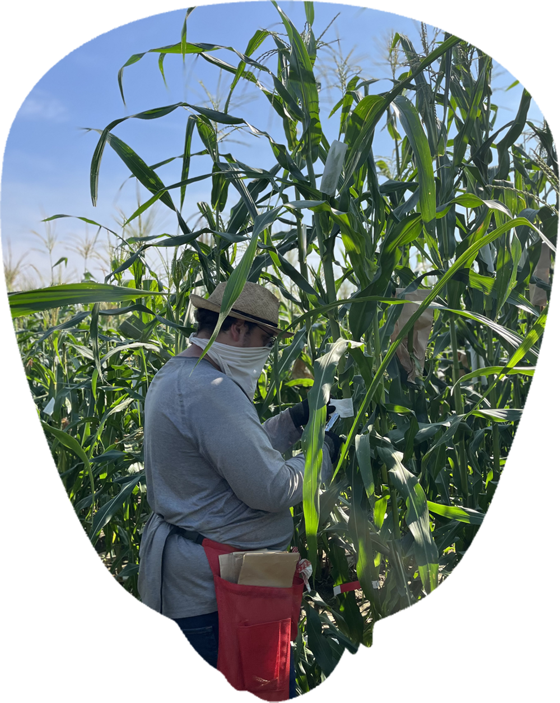
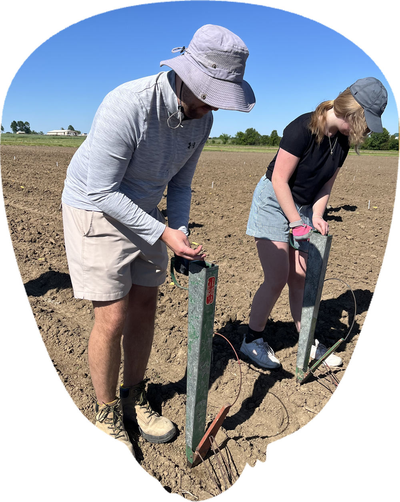
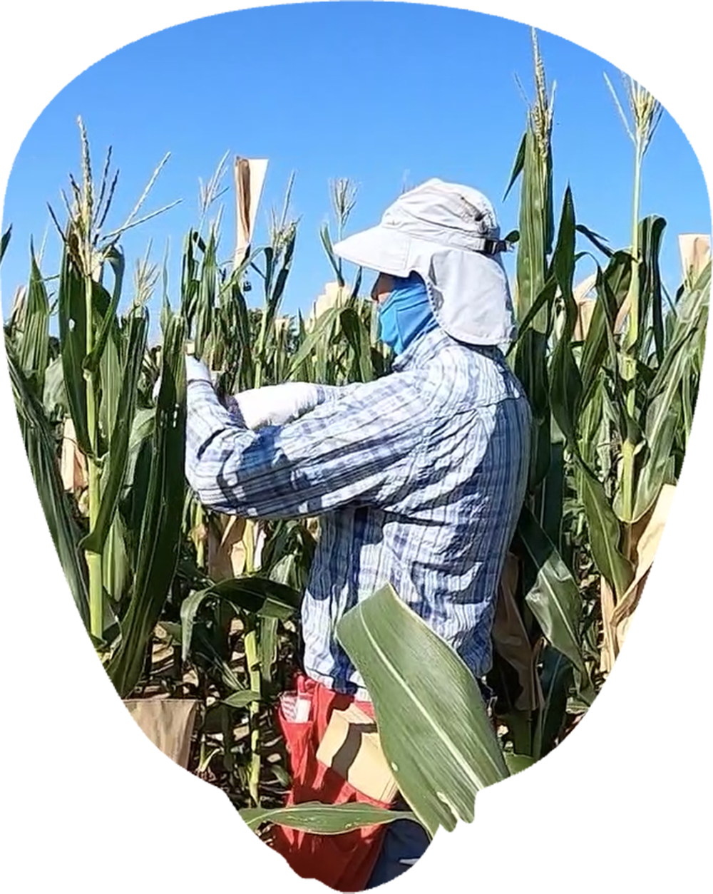

Annual fertilizer losses
Reducing nitrogen waste means protecting value that farmers already paid for.
These are the parameters CERCA aims to improve: reducing nitrogen waste,increasing efficiency, and keeping more value inside the agricultural system.
Reducing nitrogen waste means protecting value that farmers already paid for.
Only a small fraction of applied nitrogen ultimately reaches human consumption.
Nitrogen loss is both an environmental challenge and an economic leak.
Better nitrogen use can support lower emissions and stronger agricultural systems.

CERCA connects biological innovation with practical outcomes: lower waste, better timing, stronger margins, and more value retained across agricultural systems.
Keep more nitrogen working inside the system.
Match crop demand with seasonal resources.
Turn input efficiency into economic resilience.
Create stronger outcomes for farms and communities.

“The best agricultural innovation stories do not ask rural communities to choose between productivity and responsibility.”

CERCA connects crop design with outcomes that matter across scales: plant function, field performance, farm economics, rural resilience, and food-system sustainability.
Better nitrogen allocation and cold-season readiness.
More efficient capture of light, nitrogen, and time.
Lower waste, better timing, and stronger margin potential.
More resilient rural economies built around efficient production.
Reduced losses and better alignment between biology and value.
CERCA identify maize varieties that maintain consistent yields across different environments, reducing the risk of crop failure.

CERCA reframes maize improvement around a simple transition: less value leaving the system, more value working for farms, communities, and the environment.
Fertilizer investment can leave the farm system before it becomes productive value.
More nitrogen stays active in crop and soil pathways that support future value.
Cold-sensitive maize misses part of the early-season light and nitrogen window.
Cold tolerance helps maize use more of the season farmers already manage.
Inputs that do not become useful output reduce resilience in tight-margin years.
Better crop design can turn efficiency into stronger agronomic and economic outcomes.

Whether you fund translational science, support farmer-facing pilots, build partnerships, or amplify outreach, CERCA is designed to connect advanced plant biology with practical field relevance.